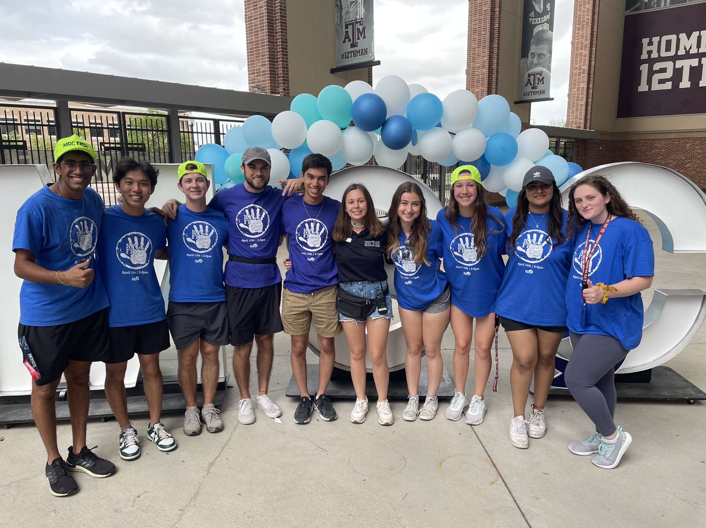
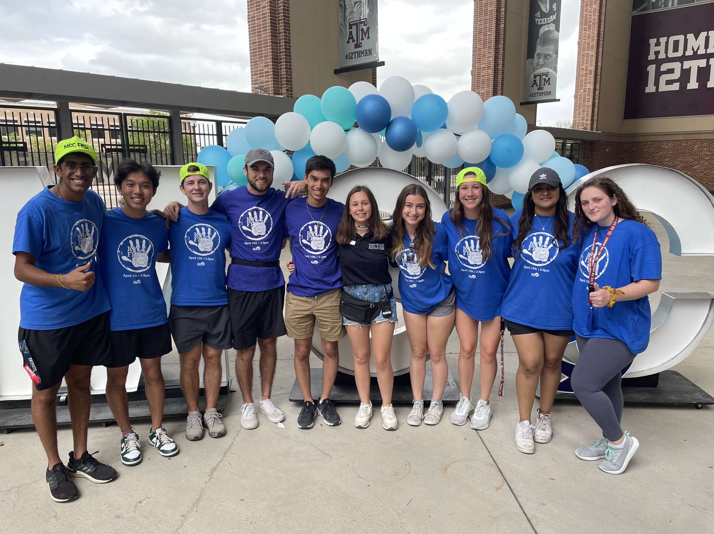
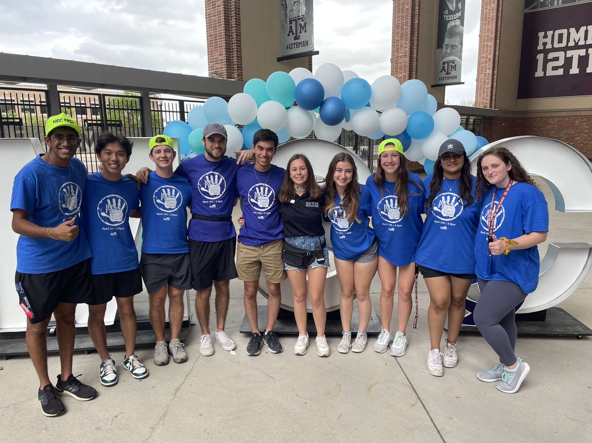

Howdy! My name is Spencer, and I am a junior computer science major from Katy, Texas. I am pursuing my undergraduate degree at Texas A&M University in College Station. I grew up in a very chaotic family which includes my parents, three younger siblings, two dogs, and a cat. Outside of school, I love fashion, traveling, videography, music, and new technology. I believe I pick up more hobbies than I can afford. My current, favorite hobby is bowling. Four of my roommates and I are taking a bowling class this semester. Growing up, I participated in lots of sports (football, soccer, taekwondo, golf, etc.). Despite my active childhood, I still love lying in bed all day. Too bad school and work require me to get up! Speaking of work, I currently work at the IT Help Desk for our College of Engineering. I work for two reasons. One, I'm incredibly materialistic and love buying things. Two, I have to support my son (cat). As mentioned earlier, I enjoy traveling and making videos. My current film project is a documentary on my recent trip to Costa Rica with my family. During the trip, I got to visit active volcanos, swim on the beach, and have lots of pina coladas. Another one of my hobbies is music. I played the viola throughout middle/high school and am currently learning guitar. I love to collect vinyl records and have a pretty nice listening setup in my apartment. From all these hobbies, I have realized I am the type of person who enjoys the process of learning. I am not afraid of trying something new, and that is why I decided to pursue computer science. In this field, you are constantly learning and can shape your own career. Below are a few pictures of my friends and me.
